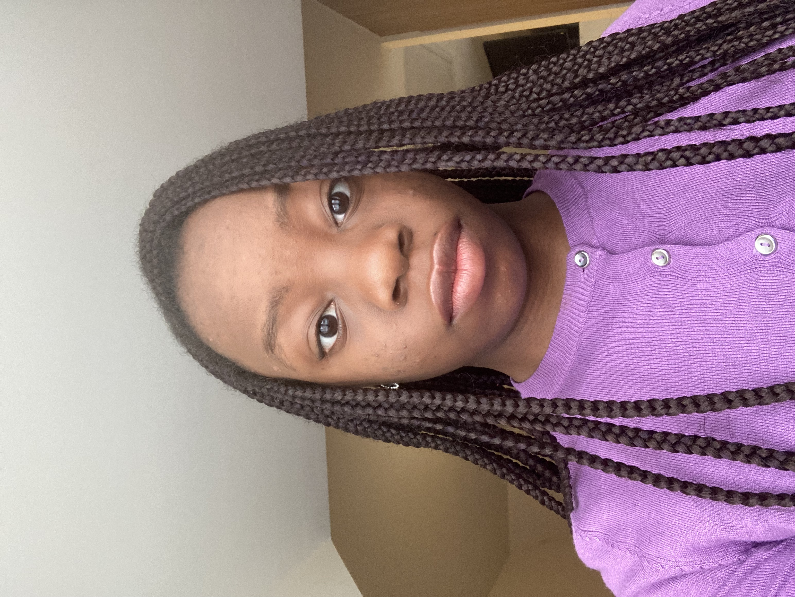

My Resume

Summary
An Aspiring Data Scientist, who's greatest strengths are problem-solving and wanting to learn new things
Education
Highsted Grammar School: 2016-2023
2016-2021: GCSEs
- Mathematics - Grade 8
- Biology - Grade 8
- Chemistry - Grade 8
- Physics - Grade 8
- History - Grade 8
- Religious Studies - Grade 7
- Sociology - Grade 7
- Sports Studies - Grade 7
- English Language - Grade 6
- English Literature - Grade 6
- French - Grade 6
2021-2023: A-Levels
- Extended Project Qualification (EPQ) - Grade A
- Mathematics - Grade B
- Further Mathematics - Grade B
- Computer Science - Grade B
- Biology - Grade D
Multiverse
2023-Present: Digital & Technology Solutions Degree
Work Experience
September 2023-Present: First Central
Data & Analytics Apprentice
My responsibilities include:
- Worked within Business Intelligence for 6 months. Created Dashboards using Power BI to help company make business decisions
- Worked within Data Business Consulting Team for 6 months
Skills
- Power BI
- SQL
- Python
- Data Analysis
- Power Apps
- Power Automate
Certifications
Hobbies
- Swimming
- Learning native language: Yoruba
- Exploring online courses related to Computer Science
Contact Me
- Email: pelumi.omopariola@outlook.com
- LinkedIn